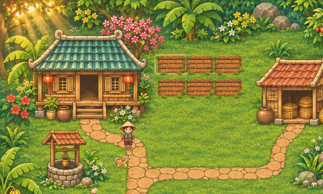

MỘT GÓC VƯỜN, MỘT NIỀM VUI
Vườn nhà
Gieo hạt, chăm vườn và thu hoạch theo thời tiết.

Giữ trọn bối cảnh. Mục tiêu nằm trong vùng tác vụ bên cạnh; trên điện thoại dọc, thẻ nằm dưới bản đồ.
Bản duyệt bố cục và trạng thái. Các số liệu là tình huống minh họa, không phải save đang chơi. Nút ở đây chỉ mô tả nơi sẽ đến; không thực hiện giao dịch, không ghi tiến trình và không rút ngắn mùa vụ.